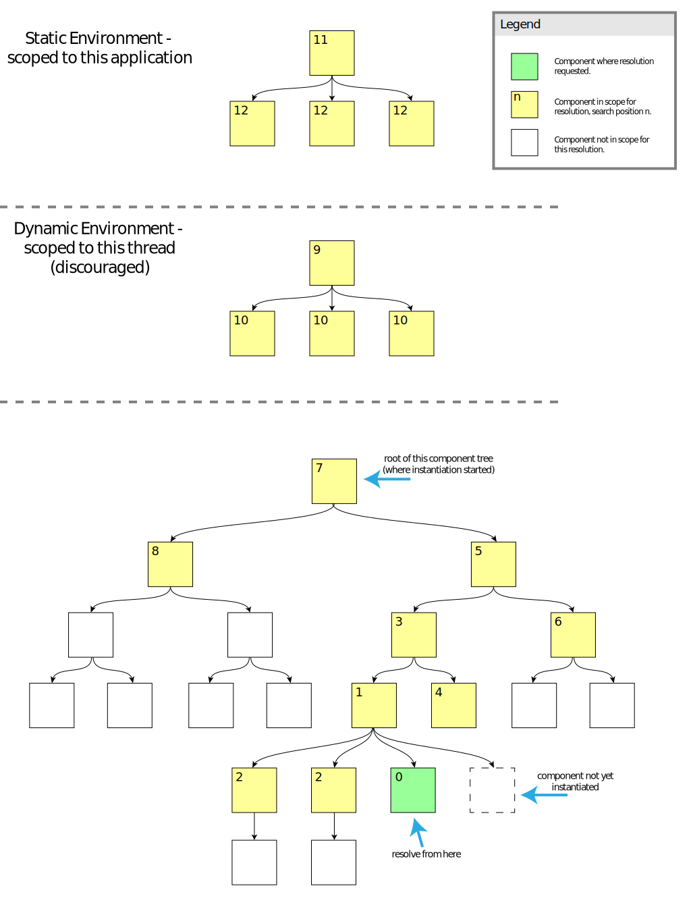

Components may have different requirements depending on the context in which they are operating. For example, a subcomponent might operate differently when running on a production server versus when testing locally off the file system, and differently still when operating in the context of automated tests. In a more fine-grained way, a component may behave differently when operating in a browser with different capabilities, or on behalf of a user who has expressed particular needs or preferences. Infusion's IoC system allows the values and behaviour attached to components to be responsive to their context, conditioned by the visibility of certain strings known as context names at locations in the component tree. Each component in the tree exposes a collection of these context names, which are derived from the component's type and grade names.
How context names are derived
Configuration material makes use of context names, when it is expanding.
IoC References are strings formatted in a particular way, starting with a context
expression contained in curly brackets. The context expression may consist of just a single context name,
or else it may take the form of an IoCSS selector which may mention several context names.
Context names are derived both from particular components in the tree which have already instantiated
(ancestors) and the static environment. The static environment can be thought of as a set of
contexts which are global to the entire application (that is, a context managed by the JavaScript
virtual machine operated by the runtime - for example that derived from a browser frame or
V8 context). These names can be matched by the
names appearing in curly brackets at the beginning of EL path expressions like
"{contextName}.furtherPath". Each component in the tree can give rise to a context name through
up to four strategies:
- The fully qualified name typeName or gradeNames of the component that is found in the context,
e.g.
"fluid.uploader.progressiveStrategy" - The last path segment of any of the names from strategy 1 (e.g.
progressiveStrategy) - The component's name when embedded within its own parent, e.g.
"strategy"- this strategy is not available for components at the head of the tree. It is also the most unstable strategy since it depends on particular naming of members in the tree rather than remaining stable if the tree is reorganised. However, it is the only route for matching a particular instance of a component rather than matching components by their type or name in general. - The component's "nickname" - which by default is derived from the last path segment of its fully
qualified name, e.g.
"progressiveStrategy", but may be overridden by an top-level option named nickName. This facility is historical and should not be used by new code.
Sometimes you just need a context name, and don't need a component that does anything. In this case,
you can use the special "vestigial" Fluid component which is created using the universal creator
function [fluid.typeTag](fluid.typeTag.md). This takes as argument the name which is to be written
onto the typeName member of the returned object, and returns a "component" which defines nothing
else but the type tag. For example, an automated testing file might define a testing environment tag.
How context names are matched
The rules for matching a context expression onto one or more components in the tree differ according to the kind of expression it is. Expressions which just consist of a single context name will match upwards - searching from the reference point into enclosing scopes as described in the following section. Expressions which contain a space are recognised as IoCSS expressions which will match downwards in the tree as described on their own page. Currently, these more complex expressions may only appear in a component's configuration in the top-level area named distributeOptions. Regardless of the direction of search, the rules for matching context names at a particular component location in the tree are the same, as described in the previous section.
Where context names are looked for
Context names listed in a configuration are searched for at instantiation time, sequentially, in three kinds of "scopes" or "environments".
- Most immediately, context names are searched for in the tree of currently instantiating components, searching upwards through the tree from the parent of the component where the context name is held.
- Following this, a search is made in the dynamic environment, which is notionally a separate tree of components bound to the currently executing stack frame (this facility is deprecated and will be removed in a future version of the framework)
- Finally, context names are sought in the static environment, which is a tree of components attached globally to the JS VM (or context within it) as a whole.
